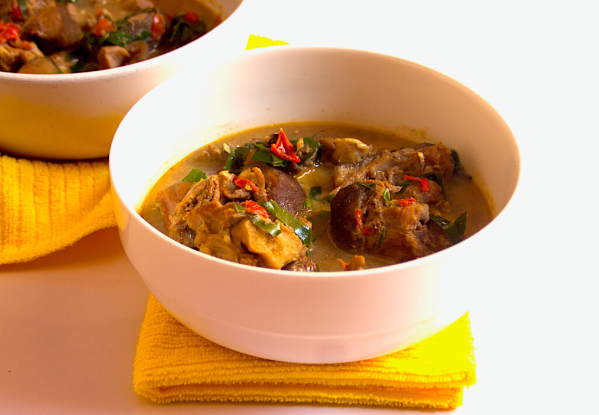
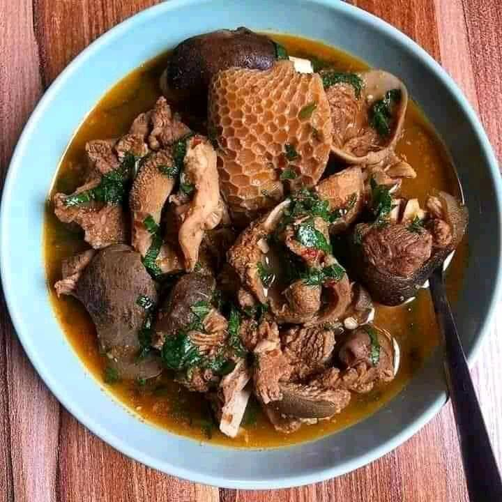
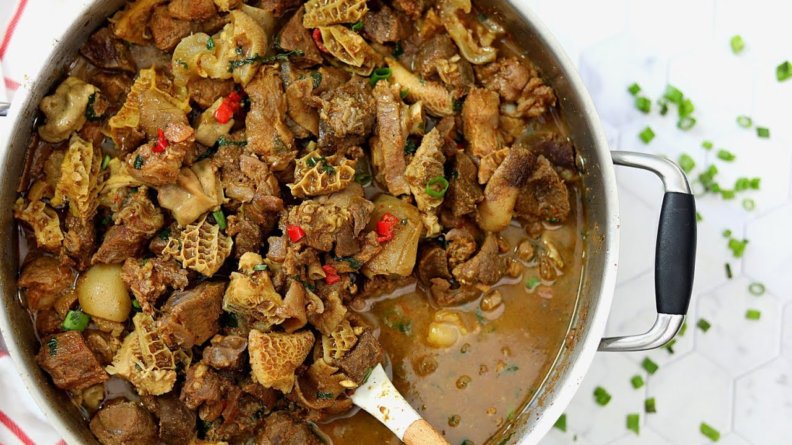
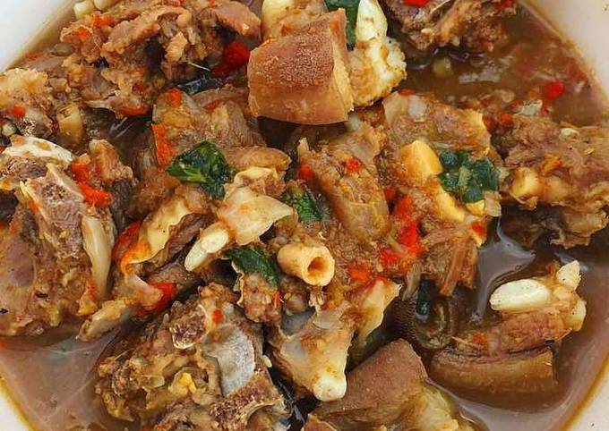
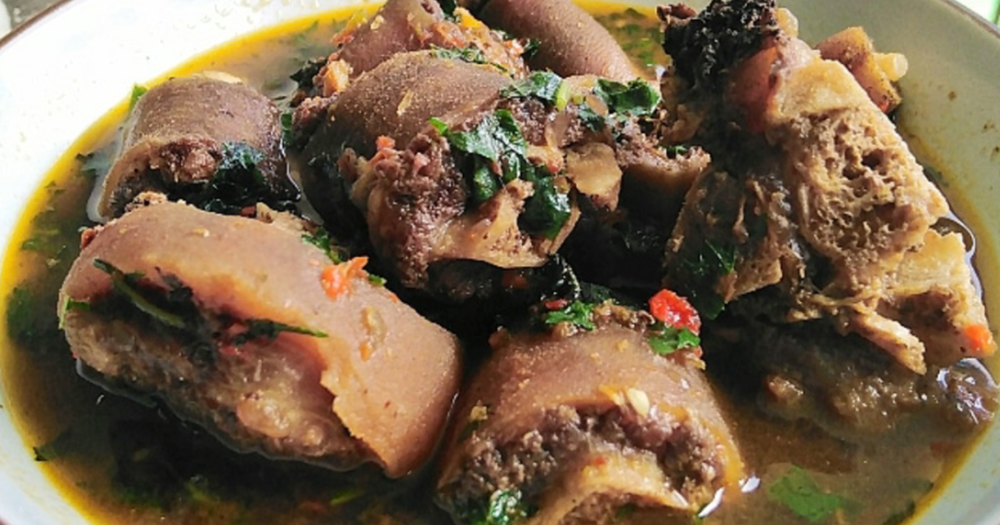

My Favourite Meal
The name of my favourite meal is Goat meat peppersoup
About the meal
Pepper Soup is a popular Nigerian soup recipe.
It is prepared with a wide variety of meats but typically cow or goat parts.
Assorted Meat Pepper soup is popularly served at bars, restaurants and parties and quite frankly, no party is ever complete without it on the menu.
RECIPE:
| Ingredients | Measurements |
|---|---|
| Dry peppersoup-spice mix | 4 tbsp |
| Ground crayfish | 3 tbsp |
| Seasoning cubes | 2 cubes |
| Salt | 1 tbsp |
| Ground pepper | 1 tbsp |
| Fresh Goat meat | 1 kg |
| Onions | 1 small bulb |
| Grated fresh pepper (rodo) | 2 tbsp |
| Scent leaves and Uziza leaves | 4 leaves of each |
| Water | 4 cups |
Steps to prepare the meal:
- Cut goat meat into bite sizes. Add a sprinkle of salt and wash thoroughly
- Plate the goat meat into a pot then add sliced onions, seasoning cubes, salt & water
- Boil the meat for about 35minutes until it is well softened
- Add in your peppersoup-spice mix and fresh pepper
- Cover the pot and allow to cook for another 10minutes
- Add in scent leaves and uziza leaves
- Reduce the heat and allow to simmer for another 2minutes
- Your Goat meat peppersoup is ready!
Here are pictures of what the final result should look like 👇

- 
- 
- 
- 
- 